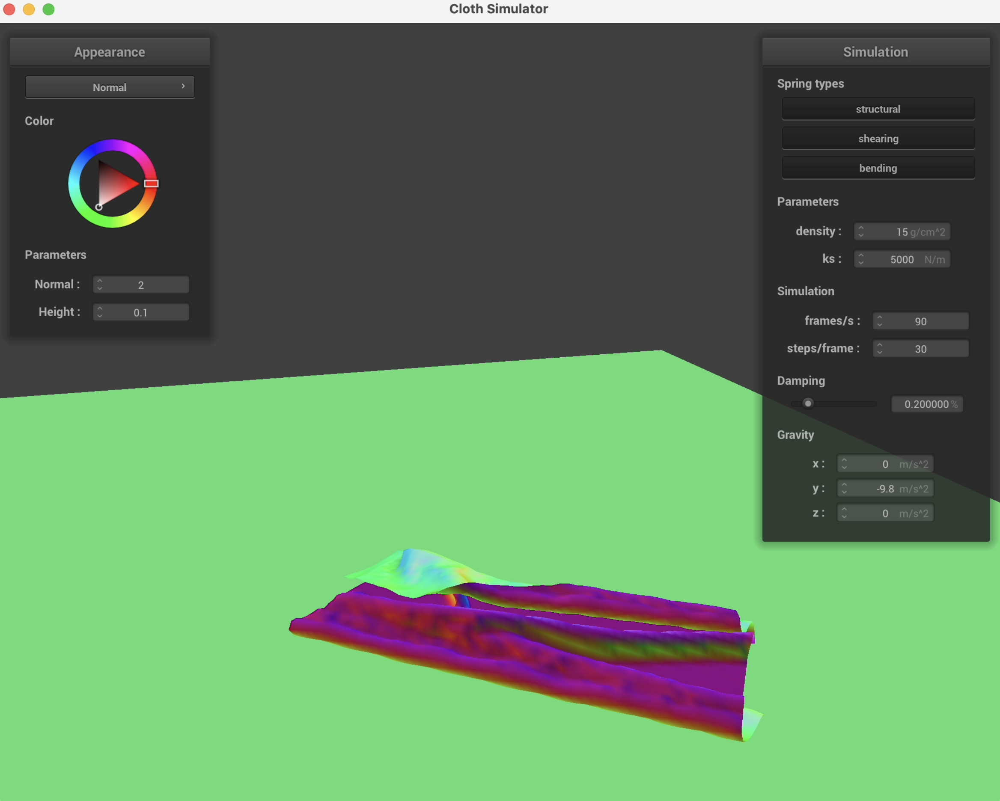
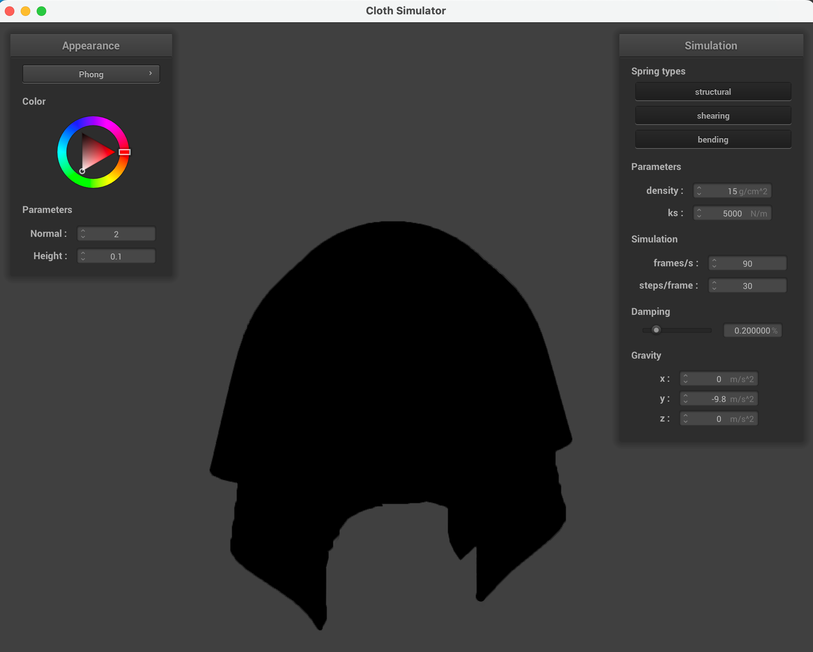
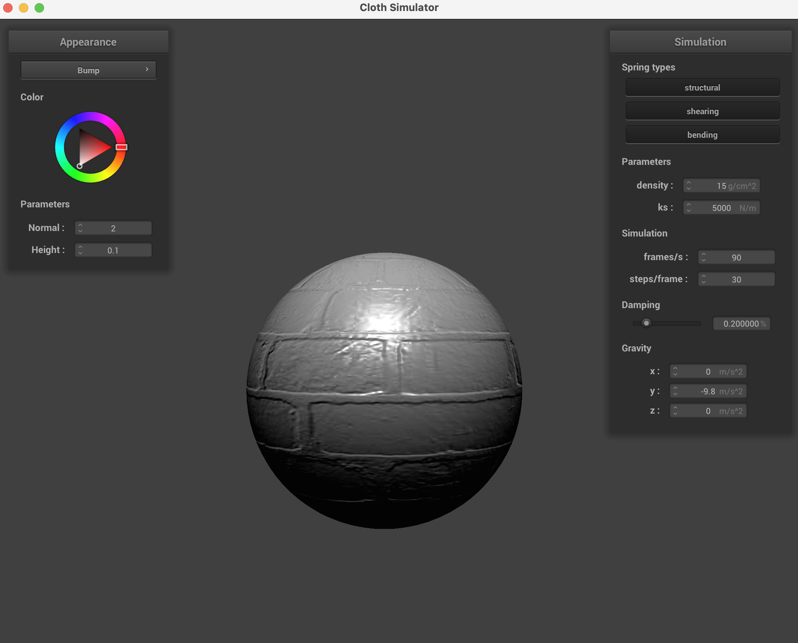

Overview
In this assignment, I implemented a real-time cloth simulation using a mass and spring-based system, focusing on building the necessary data structures for discretely representing cloth and incorporating physical constraints to simulate realistic behavior. My process includes applying numerical integration techniques for animating cloth movement and handling both object collisions and self-collisions to prevent clipping. A key part of the project involves experimenting with various parameters, such as the spring constant and cloth density, to observe their effects on the cloth's behavior, including draping, folding, and settling. This allows me to simulate different fabric types and their physical properties accurately.
Part I: Masses and springs
To build a grid of masses and springs for my cloth simulation, I first calculated the spacing between points based on the cloth's width and height, and the number of points in each dimension. I then iterated through each grid point, creating PointMass objects with positions determined by their x and y indices, adjusted for either horizontal or vertical orientation, and marked them as not pinned by default. For any points specified in the pinned array, I set them to be immovable, ensuring parts of the cloth could be fixed in space. Following the mass creation, I established springs between adjacent points to simulate structural integrity, adding structural springs between each point and its immediate neighbors, shearing springs diagonally to oppose shear deformation, and bending springs to connect points two steps apart in both directions for increased cloth flexibility.
Some screenshots of scene/pinned2.json
What the wireframe looks like when
(1) without any shearing constraints
(2) with only shearing constraints
(3) with all constraints.

Part II: Simulation via numerical integration
Experimenting with some the parameters in the simulation
Spring constant ks
A low spring constant results in the cloth being very flexible and having more creases. The cloth behaves more like a fluid or a thin silk than a solid fabric. With a high spring constant, the cloth becomes much stiffer and holds its shape better, showing minimal creases.
ks=500 N/m

ks=5000 N/m
ks=50000 N/m
Density
Increasing the density of the cloth makes it heavier.A heavier cloth has more creases under its own weight and stretches more before coming to rest.Decreasing the density makes the cloth lighter, which exhibits less sagging under gravity. It will have less stretching and may come to rest more quickly compared to a heavier cloth.
density = 1 g/cm^2
density = 15 g/cm^2
density = 50 g/cm^2
Damping (please see webpage for video)
Increasing the damping parameter reduces the oscillations and vibrations within the cloth by dissipating energy more rapidly. The cloth looks more rigid and settles to a rest position faster. Decreasing the damping allows the cloth to retain more energy from movements and forces, resulting in longer-lasting oscillations and a more dynamic response, similar to the behavior of lightweight and loosely woven fabrics that flutter easily.
damping = 0.08
damping = 0.2
damping = 0.57
screenshot of the shaded cloth from scene/pinned4.json in its final resting state
Part III: Handling collisions with other objects
The collision detection algorithms that identify when a point mass of the cloth comes into close proximity or intersects with another object. Once a potential collision is detected, I applied a collision response mechanism to adjust the position and velocity of the affected point mass, effectively simulating the physical bounce and resistance that would occur in real life. This involved calculating the normal vector at the point of collision and reflecting or adjusting the point mass's trajectory to prevent it from penetrating the object, instead making it slide along the object's surface or bounce off, depending on the material properties of both the cloth and the object.
Adjusting the spring constant has a direct impact on the cloth's behavior. Lower values result in a softer, more pliable cloth that can easily wrap around objects, producing many small creases. Higher values create a stiffer cloth that maintains more of its shape and has fewer, less creases.
ks=500 N/m
ks=5000 N/m
ks=50000 N/m
screenshot of the shaded cloth lying peacefully at rest on the plane
Part IV: Handling self-collisions
self-collision
Varying density and ks (please see webpage for video)
Increasing the density of the cloth makes it heavier, which will have a more pronounced gravitational pull, leading to faster and potentially more forceful interactions when different parts of the cloth collide; Decreasing the density results in a lighter cloth that falls more slowly and gently onto itself. Lighter cloths exhibit less forceful self-collisions, leading to softer and less compact folds. The cloth can flutter or billow more easily as it falls.
A higher spring constant results in a stiffer cloth that is more resistant to bending and folding. It tends to maintain more of its shape, leading to broader and less pronounced folds. When parts of the cloth collide, they are less likely to deform significantly upon impact. A lower spring constant makes the cloth more flexible and susceptible to bending and folding. As a result, when it falls on itself, it can create a larger number of more intricate and detailed folds. The increased flexibility allows the cloth to conform more closely to itself.
Default: density = 15 g/cm^2, ks = 5000 N/m
density = 1 g/cm^2, ks = 5000 N/m
density = 50 g/cm^2, ks = 5000 N/m
density = 15 g/cm^2, ks = 500 N/m
density = 15 g/cm^2, ks = 50000 N/m
Part V: Shaders
What is a shader program and how vertex and fragment shaders work together to create lighting and material effects:
A shader program is runned on the GPU (instead of CPU) to control the rendering of graphics by using vertex data and pixel data to create visual effects, including lighting and material properties on 3D models. It consists of the vertex shader and the fragment shader. The vertex shader operates on each vertex of a 3D model, performing transformations (e.g. translation, rotation, and scaling) and calculating vertex lighting. It passes transformed vertices and any relevant lighting or texture information to the fragment shader. The fragment shader then operates on every pixel that will be drawn to the screen, determining its final color by applying lighting calculations based on light source properties, material properties of the object, and the vertex information received.
Blinn-Phong shading model
The Blinn-Phong shading model simulates the way light interacts with surfaces to produce realistic lighting effects. The model has 3 main components: ambient, diffuse, and specular reflections. Ambient reflection represents indirect light that scatters evenly across the surface, giving the object a base color even in shadows; Diffuse reflection simulates the scattering of light from a light source directly hitting the surface, affecting parts of the surface differently based on their orientation to the light source. The specular reflection is calculated using the halfway vector between the viewer's perspective and the light source direction, rather than the reflection vector used in the original Phong model. This approach better simulates the shiny spots where the light is directly reflected towards the viewer, giving objects a glossy appearance. The Blinn-Phong model is very efficient and effective in simulating realistic lighting
Ambient only
Specular only
Diffuse only
entire Blinn-Phong
Texture mapping
texture_4
Bump mapping manipulates the surface normals during rendering. It only affects the shading, not the object's shape or silhouette. Comparatively, displacement mapping modifies the geometry of the surface based on the texture information, as we can see in the screenshot that the sphere does not have a smooth surface.
Bump mapping
texture_3
Displacement mapping
texture_3
Varying coarseness
The coarseness in bump mapping affects the perceived roughness or smoothness of the surface. A coarser (16) bump map produces slightly more pronounced bumps and shadows. A finer bump (128) map results in subtler texture details.
The coarseness of displacement mapping affects the geometric complexity of the surface. A coarser (16) displacement map can significantly alter the silhouette of the object, creating large, visible protrusions. A finer (128) map adjusts the surface detail at a smaller scale. The rendering impact of different coarseness levels is more obvious with displacement mapping than with bump mapping due to the actual geometric changes.
-o 16 -a 16
Bump
Displacement
-o 128 -a 128
Bump
Displacement